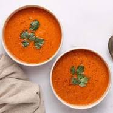

Tomato Soup
Back Home

Description:
A wholesome tomato soup
Ingredients:
- 2x 500g Tinned Tomatos
- 2x Chicken Stock Cubes
- 2x Brown Onions
- 1x tbsp Minced Garlic
- Drizzle of Olive Oil
- 1x tbsp Italian Herbs
- 1x tbsp Paprika
Method:
- Heat Olive Oil in Large pot
- Chop Onions
- Cook onions until soft, 2-3 minutes.
- Meanwhile, boil 1 litre of water in kettle.
- Add Garlic, Italian Herbs and Paprika, cooking until fragrant, 1 minute.
- Add tinned Tomatos, Water and Stock Cubes.
- Cook on High, 20-30 minutes.
- Optionally, Blend with hand blender